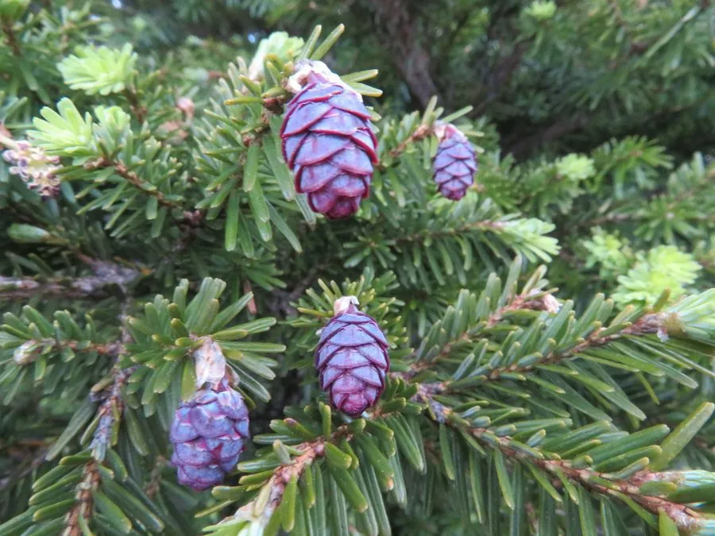

乔木 · 植物界
铁杉 Tsuga chinensis

中国南方山地的常绿针叶树，枝条细软下垂，针叶先端圆钝，球果小而密集，木材坚韧耐腐，被称为“铁杉”。
- 分类
- 门裸子植物门纲松柏纲目松柏目科松科属铁杉属
- 栖息环境
- 海拔 1000–3000 米的中山山地与沟谷，喜温暖湿润、多云雾
- 地理分布
- 中国长江流域以南及西南山地，为中国特有树种
- 保护级别
- 暂无评估；中国未列入国家重点保护野生植物名录
物种志
铁杉为常绿针叶乔木，高可达 50 m，树冠塔形，大枝平展、小枝细软下垂；树皮暗灰褐色、纵裂。针叶条形，长 1–2.5 cm，扁平，先端圆钝或微凹，下面有两条灰白色气孔带，在小枝上排成两列。雌雄同株，雄球花黄色、生于新枝基部，雌球花绿色、生于枝顶；球果小、卵圆形，长 1.5–2.5 cm，成熟时褐色，种子具翅。
铁杉分布于中国长江流域以南及西南山地的中山地带，常与阔叶树混生，喜温暖湿润、多云雾的环境，耐阴、耐寒，适宜深厚肥沃、排水良好的酸性土壤。木材坚硬、纹理直、耐腐，可供建筑、家具与枕木用；树皮可提取栲胶；树形优美、枝叶婆娑，是园林中的观赏树。铁杉林在涵养水源、维护山地生态平衡方面具有重要价值，部分地区已建立自然保护区加以保护。
形态与习性
- 株高可达 50 m，小枝细软下垂
- 针叶条形，长 1–2.5 cm，先端圆钝
- 花期4 月，雄球花黄色
- 球果成熟10 月，卵圆形长 1.5–2.5 cm
- 光照耐阴，幼树喜庇荫
- 水分喜湿润多雾
- 土壤深厚肥沃的酸性壤土
- 主要用途建筑与家具用材、树皮提取栲胶、园林观赏
趣味知识
- 铁杉的小枝细软下垂，针叶先端圆钝，摸起来不像其他松树那样扎手。
- 铁杉木材坚硬耐腐，民间因此以“铁”来命名它。
- 铁杉球果小、种子带翅，成熟后能随风传播到较远的林下。
- 铁杉喜阴湿多雾的山地，常与阔叶树混生，形成针阔混交林。